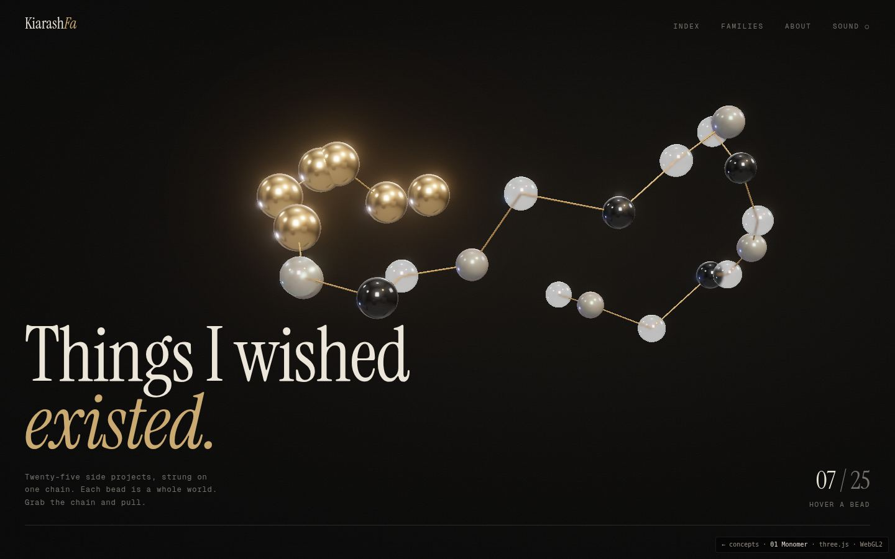

01
Monomer
Twenty-five beads on one chain.
dark luxurytactilethree.jsverlet physics
- Story
- You are a polymer scientist, so your body of work becomes one macromolecule. Each project is a monomer, and the chain doubles as a necklace.
- The 25
- One bead per project. Material and size encode tier (gold flagships, then glass, onyx, pearl). Drag the chain; hover a bead for its name.
- Project 26
- One more monomer joins the chain.
- Watch out
- Glass is heavy on weak phones and needs a fallback material. Reading names is indirect, so it needs a plain index view beside it.
Open concept →drag the chain